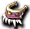
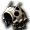
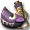
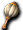

蛋
| 名稱 | 價格 | 限制 | 職業 | Wei | 取得方式 |
 守護動物之蛋 守護動物之蛋 | 1,500,000 | Lv0 | 戰修盜騎阿聖魔預吟 | 5 | 斯歐米：守護動物店、鑽石波特波特 |
| 能力 | 孵化前的蛋 | ||||
| 備註 | 備註內容 | ||||
| 名稱 | 價格 | 限制 | 職業 | Wei | 取得方式 |
 已孵化的蛋 已孵化的蛋 | 20,000 | Lv21 | 戰修盜騎阿聖魔預吟 | 7 | 取得方式 |
| 能力 | 雙擊可呼叫守護動物 | ||||
| 備註 | 備註內容 | ||||
| 名稱 | 價格 | 限制 | 職業 | Wei | 取得方式 |
| 豪華的蛋 | 1,000,000 | Lv0 | 戰修盜騎阿聖魔預吟 | 5 | 取得方式 |
| 能力 | 外表豪華但內容是普通的蛋 | ||||
| 備註 | 備註內容 | ||||
| 名稱 | 價格 | 限制 | 職業 | Wei | 取得方式 |
 已孵化的豪華蛋 已孵化的豪華蛋 | 20,000 | Lv21 | 戰修盜騎阿聖魔預吟 | 7 | 諾肯將軍、鑽石波特波特 |
| 能力 | 雙擊可呼叫守護動物 | ||||
| 備註 | 孵化守護動物的蛋時，不知為何會變成豪華的蛋。 | ||||
| 名稱 | 價格 | 限制 | 職業 | Wei | 取得方式 |
| 孵化的蛋(特別色) | 不明 | Lv0 | 戰修盜騎阿聖魔預吟 | 7 | （大概）NEXON SS競賽限定色 |
| 能力 | 雙擊可呼叫守護動物 | ||||
| 備註 | 備註內容 | ||||
武器
| 名稱 | 價格 | 限制 | 職業 | Wei | 取得方式 |
| 克羅卡牙 | 200,000 | Lv11 | 守護 | 9 | 斯歐米：守護動物店 |
| 能力 | 攻20～30 DAM10％ | ||||
| 備註 | 守護動物用，牙，第一期型武器 | ||||
| 名稱 | 價格 | 限制 | 職業 | Wei | 取得方式 |
 伊瓜牙 伊瓜牙 | 300,000 | Lv21 | 守護 | 11 | 貝托斯凱洛斯 |
| 能力 | 攻30～50 DAM30％ | ||||
| 備註 | 第2期守護裝備 | ||||
| 名稱 | 價格 | 限制 | 職業 | Wei | 取得方式 |
| 蒂拉諾牙 | 400,000 | Lv41 | 守護 | 13 | 貝托斯凱洛斯 |
| 能力 | 攻40～70 DAM60％ | ||||
| 備註 | 守護動物用，牙，第三期型武器 | ||||
| 名稱 | 價格 | 限制 | 職業 | Wei | 取得方式 |
 斯涅格牙 | 500,000 | Lv71 | 守護 | 15 | 卡德曼（童話夢魘1） |
| 能力 | 攻50～90 DAM100％ | ||||
| 備註 | 守護動物用，牙，第四期型武器 | ||||
| 名稱 | 價格 | 限制 | 職業 | Wei | 取得方式 |
 極光之器(限定品) 極光之器(限定品) | 1,000 | Lv1 | 守護 | 1 | 僅限2004.09.03～09.15的限定品 |
| 能力 | DAM+100 | ||||
防具
頭盔
| 名稱 | 價格 | 限制 | 職業 | Wei | 取得方式 |
 科吉特帽 科吉特帽 | 60,000 | Lv11 | 守護 | 5 | 斯歐米：守護動物店 |
| 能力 | 防禦 AC-3 | ||||
| 備註 | 第1期守護裝備 | ||||
| 名稱 | 價格 | 限制 | 職業 | Wei | 取得方式 |
 普羅迪帽 普羅迪帽 | 120,000 | Lv21 | 守護 | 5 |  珀普卡德曼 珀普卡德曼 |
| 能力 | 防禦 AC-7 | ||||
| 備註 | 第2期守護裝備 | ||||
| 名稱 | 價格 | 限制 | 職業 | Wei | 取得方式 |
 格蘭特帽 格蘭特帽 | 160,000 | Lv41 | 守護 | 5 | 珀普卡德曼 |
| 能力 | 防禦 AC-22 | ||||
| 備註 | 第3期守護裝備 | ||||
| 名稱 | 價格 | 限制 | 職業 | Wei | 取得方式 |
 加迪亞斯帽 加迪亞斯帽 | 200,000 | Lv71 | 守護 | 5 |  羅德哥布林（悠久之森1） 羅德哥布林（悠久之森1） |
| 能力 | 防禦 AC-45 | ||||
| 名稱 | 價格 | 限制 | 職業 | Wei | 取得方式 |
| 極光之盔(限定品) | 1,000 | Lv71 | 守護 | 1 | 僅限2004.09.03～09.15的限定品 |
| 能力 | 防禦 AC-45 | ||||
鎧甲
| 名稱 | 價格 | 限制 | 職業 | Wei | 取得方式 |
| 科吉特鎧甲 | 80,000 | Lv11 | 守護 | 6 | 斯歐米：守護動物店 |
| 能力 | 防禦 AC-7 | ||||
| 備註 | 第1期守護裝備 | ||||
| 名稱 | 價格 | 限制 | 職業 | Wei | 取得方式 |
 普羅迪鎧甲 | 150,000 | Lv21 | 守護 | 8 | 珀普卡德曼 |
| 能力 | 防禦 AC-22 | ||||
| 備註 | 第2期守護裝備 | ||||
| 名稱 | 價格 | 限制 | 職業 | Wei | 取得方式 |
 格蘭特鎧甲 格蘭特鎧甲 | 230,000 | Lv41 | 守護 | 10 | 珀普卡德曼 |
| 能力 | 防禦 AC-45 | ||||
| 備註 | 第3期守護裝備 | ||||
| 名稱 | 價格 | 限制 | 職業 | Wei | 取得方式 |
 加迪亞斯鎧甲 加迪亞斯鎧甲 | 300,000 | Lv71 | 守護 | 12 | 取得方式（童話夢魘2） |
| 能力 | 防禦 AC-90 | ||||
| 備註 | 第4期守護裝備 | ||||
| 名稱 | 價格 | 限制 | 職業 | Wei | 取得方式 |
 極光之甲(限定品) 極光之甲(限定品) | 1,000 | Lv1 | 守護 | 1 | 僅限2004.09.03～09.15的限定品 |
| 能力 | 防禦 AC-90 | ||||
項鍊
| 名稱 | 價格 | 限制 | 職業 | Wei | 取得方式 |
| 科吉托項鍊 | 20,000 | Lv11 | 守護 | 3 | 斯歐米：守護動物店 |
| 能力 | 效果 HP+50 MP+50 | ||||
| 備註 | 第1期守護裝備 | ||||
| 名稱 | 價格 | 限制 | 職業 | Wei | 取得方式 |
| 普羅迪項鍊 | 30,000 | Lv21 | 守護 | 3 | 布雷克卡德曼 |
| 能力 | 效果 HP+100 MP+100 | ||||
| 備註 | 第2期守護裝備 | ||||
| 名稱 | 價格 | 限制 | 職業 | Wei | 取得方式 |
 格蘭托項鍊 格蘭托項鍊 | 40,000 | Lv41 | 守護 | 3 | 布雷克卡德曼 |
| 能力 | 效果 HP+250 MP+250 | ||||
| 備註 | 第3期守護裝備 | ||||
| 名稱 | 價格 | 限制 | 職業 | Wei | 取得方式 |
| 加迪亞斯項鍊 | 50,000 | Lv11 | 守護 | 3 |  奈特梅爾（悠久之森2） 奈特梅爾（悠久之森2） |
| 能力 | 效果 HP+500 MP+500 | ||||
| 名稱 | 價格 | 限制 | 職業 | Wei | 取得方式 |
| 極光之項鍊(限定品) | 1,000 | Lv1 | 守護 | 1 | 僅限2004.09.03～09.15的限定品 |
| 能力 | 效果 HP+500 MP+500 | ||||
戒指
| 名稱 | 價格 | 限制 | 職業 | Wei | 取得方式 |
 科吉特戒指 科吉特戒指 | 20,000 | Lv21 | 守護 | 2 | 斯歐米：守護動物店 |
| 能力 | 效果 STR+1 CON+1 | ||||
| 備註 | 守護動物用，戒指，第一期型戒指。原本Lv11即可裝備，但2013年現在因設定錯誤（？）使裝備條件變成Lv21，儘管是「第一期型」也要到Lv21才能裝備 | ||||
| 名稱 | 價格 | 限制 | 職業 | Wei | 取得方式 |
| 科吉莫戒指 | 30,000 | Lv21 | 守護 | 2 | 取得方式:萬用彩券 |
| 能力 | 效果 STR+1、WIS+1 | ||||
| 名稱 | 價格 | 限制 | 職業 | Wei | 取得方式 |
| 普羅迪戒指 | 30000 | Lv21 | 守護 | 3 | 斯歐米：守護動物店 |
| 能力 | 效果 STR＋2 CON＋2 | ||||
| 備註 | 守護動物用，戒指，第二期型戒指 | ||||
| 名稱 | 價格 | 限制 | 職業 | Wei | 取得方式 |
| 普羅吉戒指 | Lv21 | 守護 | 2 | 取得方式 | |
| 能力 | 效果 CON+2、WIS+2 | ||||
| 備註 | 第2期守護裝備 | ||||
| 名稱 | 價格 | 限制 | 職業 | Wei | 取得方式 |
| 格蘭特戒指 | 40000 | Lv21 | 守護 | 2 | 斯歐米：守護動物店 |
| 能力 | 效果 STR+3 CON+3 | ||||
| 備註 | 守護動物用，戒指，第三期型戒指 | ||||
| 名稱 | 價格 | 限制 | 職業 | Wei | 取得方式 |
| 格蘭茲戒指 | - | Lv21 | 守護 | 2 | [] |
| 能力 | 效果 WIS+3 CON+3 | ||||
| 備註 | 第3期守護裝備 | ||||
| 名稱 | 價格 | 限制 | 職業 | Wei | 取得方式 |
| 加迪亞斯戒指 | 40,000 | Lv71 | 守護 | 2 | 異次元區域（荒廢礦坑1） 哈迪姆巴 |
| 能力 | 效果 STR+4、CON+4 | ||||
| 備註 | 守護動物用，戒指，第四期型戒指 | ||||
| 名稱 | 價格 | 限制 | 職業 | Wei | 取得方式 |
| 蓋亞斯戒指 | - | Lv71 | 守護 | 2 | 異次元區域（荒廢礦坑2）凱蒂獵人 |
| 能力 | 效果 CON+4、WIS+4 | ||||
| 名稱 | 價格 | 限制 | 職業 | Wei | 取得方式 |
 極光之戒(限定品) 極光之戒(限定品) | 1,000 | Lv1 | 守護 | 1 | 僅限2004.09.03～09.15的限定品 |
| 能力 | 效果 STR+4、CON+4 | ||||
| 名稱 | 價格 | 限制 | 職業 | Wei | 取得方式 |
| 極光之環(限定品) | 1,000 | Lv1 | 守護 | 1 | 僅限2004.09.03～09.15的限定品 |
| 能力 | 效果 CON+4、WIS+4 | ||||
道具
恢復
| 名稱 | 價格 | 限制 | 職業 | Wei | 取得方式 |
 守護者科馬里克 守護者科馬里克 | 10,000 | Lv0 | 守護 | 0 | 斯歐米：守護動物店 |
| 能力 | 效果:守護動物復活 | ||||
| 備註 | [堆疊數：5] | ||||
| 名稱 | 價格 | 限制 | 職業 | Wei | 取得方式 |
 生命之露 生命之露 | 300 | Lv0 | 守護 | 1 | 斯歐米：守護動物店 |
| 能力 | 效果:恢復HP100(守護專用) | ||||
| 備註 | [堆疊數：99] | ||||
| 名稱 | 價格 | 限制 | 職業 | Wei | 取得方式 |
| 健康棒 | 1,000 | Lv0 | 守護 | 1 | 斯歐米：守護動物店 |
| 能力 | 效果:恢復HP500(守護專用) | ||||
| 備註 | [堆疊數：50] | ||||
| 名稱 | 價格 | 限制 | 職業 | Wei | 取得方式 |
 魔法之露 魔法之露 | 300 | Lv0 | 守護 | 1 | 斯歐米：守護動物店 |
| 能力 | 效果:恢復MP50(守護專用) | ||||
| 備註 | [堆疊數：99] | ||||
| 名稱 | 價格 | 限制 | 職業 | Wei | 取得方式 |
| 魔力棒 | 1,500 | Lv0 | 守護 | 1 | 斯歐米：守護動物店 |
| 能力 | 效果:恢復MP200(守護專用) | ||||
| 備註 | [堆疊數：50] | ||||
| 名稱 | 價格 | 限制 | 職業 | Wei | 取得方式 |
 守護者之肉 守護者之肉 | 10,000 | Lv0 | 守護 | 0 | 斯歐米：守護動物店 |
| 能力 | 效果: | ||||
| 備註 | [堆疊數：20]持有時，烹飪成功率會上升。 | ||||
| 名稱 | 價格 | 限制 | 職業 | Wei | 取得方式 |
 寵物健康食品 寵物健康食品 | 0 | Lv0 | 守護 | 0 | 料理 |
| 能力 | 效果:恢復HP/MP200(守護專用) | ||||
| 備註 | [堆疊數：20]製作後經過１個月會消失。※視為付費道具，不可交易、不可丟進垃圾桶、可賣給商店 | ||||
| 名稱 | 價格 | 限制 | 職業 | Wei | 取得方式 |
 新鮮糖果 新鮮糖果 | 100,000 | Lv0 | 守護 | 1 | 斯歐米：守護動物店 |
| 能力 | 效果 | ||||
| 備註 | 親密度+1 | ||||
| 名稱 | 價格 | 限制 | 職業 | Wei | 取得方式 |
 新鮮香蕉 新鮮香蕉 | 500,000 | Lv0 | 守護 | 1 | 斯歐米：守護動物店 |
| 能力 | 效果:親密度+5 | ||||
| 備註 | [堆疊數：99] | ||||
| 名稱 | 價格 | 限制 | 職業 | Wei | 取得方式 |
 鐵分補給藥 鐵分補給藥 | 1,000 | Lv0 | 守護 | 1 | 斯歐米：守護動物店 |
| 能力 | 效果 | ||||
| 備註 | [堆疊數：99]營養劑。可治療守護動物的貧血 | ||||
| 名稱 | 價格 | 限制 | 職業 | Wei | 取得方式 |
| 感冒藥 | 1,000 | Lv0 | 守護 | 1 | 斯歐米：守護動物店 |
| 能力 | 效果 | ||||
| 備註 | [堆疊數：99]對咳嗽、發燒、鼻塞有效的藥。可治療守護動物的感冒 | ||||
| 名稱 | 價格 | 限制 | 職業 | Wei | 取得方式 |
| 消化促進劑 | 1,500 | Lv0 | 守護 | 1 | 斯歐米：守護動物店、守護訓練、守護訓練 |
| 能力 | 效果 | ||||
| 備註 | [堆疊數：99]調整腸胃狀況的藥。可治療守護動物的消化不良 | ||||
| 名稱 | 價格 | 限制 | 職業 | Wei | 取得方式 |
| 整腸促進藥 | 10,000 | Lv0 | 守護 | 1 | 守護訓練 |
| 能力 | 效果 | ||||
| 備註 | 調整腸胃狀況的藥。可治療守護動物的消化不良。 | ||||
| 名稱 | 價格 | 限制 | 職業 | Wei | 取得方式 |
 寵物矯正藥 寵物矯正藥 | 100 | Lv0 | 守護 | 1 | 取得方式 |
| 能力 | 效果 | ||||
| 備註 | 對守護動物使用後，可將異常的狀態恢復正常 | ||||
| 名稱 | 價格 | 限制 | 職業 | Wei | 取得方式 |
| 寵物覺醒藥 | 10 | Lv0 | 守護 | 1 | 斯歐米：守護動物店 |
| 能力 | 效果 | ||||
| 備註 | [堆疊數：1]對沉睡中的「孵化的豪華蛋」使用即可將其喚醒 | ||||
| 名稱 | 價格 | 限制 | 職業 | Wei | 取得方式 |
 離子飲料 離子飲料 | 1,500 | Lv0 | 守護 | 1 | 斯歐米：守護動物店、守護訓練 |
| 能力 | 效果 | ||||
| 備註 | [堆疊數：99]滲透全身的運動飲料。可治療守護動物的脫水症狀 | ||||
| 名稱 | 價格 | 限制 | 職業 | Wei | 取得方式 |
| 礦物質飲料 | 10,000 | Lv0 | 守護 | 1 | 取得方式 |
| 能力 | 效果 | ||||
| 備註 | 滲透全身的運動飲料。可治療守護動物的脫水症狀 | ||||
| 名稱 | 價格 | 限制 | 職業 | Wei | 取得方式 |
 梅塔利亞爾傳承記 梅塔利亞爾傳承記 | 10,000 | Lv0 | 守護 | 1 | 斯歐米：守護動物店、守護訓練、守護訓練 |
| 能力 | 效果 | ||||
| 備註 | [堆疊數：99]流傳於邁索西亞的眾多英雄詩篇。可讓守護動物心情變好 | ||||
| 名稱 | 價格 | 限制 | 職業 | Wei | 取得方式 |
| 梅塔利亞爾見聞錄 | 10,000 | Lv0 | 守護 | 1 | 取得方式 |
| 能力 | 效果 | ||||
| 備註 | 流傳於邁索西亞的眾多英雄詩篇。可讓守護動物心情變好 | ||||
| 名稱 | 價格 | 限制 | 職業 | Wei | 取得方式 |
| 神木樹液 | 10,000 | Lv0 | 守護 | 1 | 斯歐米：守護動物店 |
| 能力 | 效果 | ||||
| 備註 | [堆疊數：99]可從米魯里斯的伊梅特利樹採集到的奇蹟之藥。可治療守護動物的癌症 | ||||
| 名稱 | 價格 | 限制 | 職業 | Wei | 取得方式 |
 守護動物的點心 守護動物的點心 | 100 | Lv0 | 守護 | 1 | 斯歐米：守護動物店 |
| 能力 | 效果 | ||||
| 備註 | [堆疊數：99]可稍微緩解守護動物的飢餓。上升10％ | ||||
| 名稱 | 價格 | 限制 | 職業 | Wei | 取得方式 |
 守護動物的飯 守護動物的飯 | 500 | Lv0 | 守護 | 1 | 斯歐米：守護動物店 |
| 能力 | 效果 | ||||
| 備註 | [堆疊數：99]可緩解守護動物的飢餓。上升50％ | ||||
| 名稱 | 價格 | 限制 | 職業 | Wei | 取得方式 |
 守護動物的豪華飯 守護動物的豪華飯 | 1,000 | Lv0 | 守護 | 1 | 斯歐米：守護動物店 |
| 能力 | 效果 | ||||
| 備註 | [堆疊數：99]可大幅緩解守護動物的飢餓。上升100％ | ||||
| 名稱 | 價格 | 限制 | 職業 | Wei | 取得方式 |
 提辛戒指 提辛戒指 | 100 | Lv0 | 守護 | 1 | 斯歐米：守護動物店 |
| 能力 | 效果 | ||||
| 備註 | [堆疊數：99]可稍微緩解守護動物的口渴。上升10％ | ||||
| 名稱 | 價格 | 限制 | 職業 | Wei | 取得方式 |
| 冷飲 | 500 | Lv0 | 守護 | 1 | 斯歐米：守護動物店 |
| 能力 | 效果 | ||||
| 備註 | [堆疊數：99]可緩解守護動物的口渴。上升50％ | ||||
| 名稱 | 價格 | 限制 | 職業 | Wei | 取得方式 |
 冷膠囊 冷膠囊 | 1,000 | Lv0 | 守護 | 1 | 斯歐米：守護動物店 |
| 能力 | 效果 | ||||
| 備註 | [堆疊數：99]可大幅緩解守護動物的口渴。上升100％ | ||||
| 名稱 | 價格 | 限制 | 職業 | Wei | 取得方式 |
 守護者Z | ？ | Lv0 | 守護 | 0 |  寵物玩偶 寵物玩偶 |
| 能力 | 效果 | ||||
| 備註 | [堆疊數：99]守護動物專用的特級營養劑。可恢復疾病、飢餓、口渴。此外還能恢復10點親密度。 | ||||
促進變態
搖鈴
| 名稱 | 價格 | 限制 | 職業 | Wei | 取得方式 |
 搭乘搖鈴 | 10 | Lv20 | 守護 | 3 | 任務報償品 |
| 能力 | 讓守護動物持有並擊敗怪物後，可能會成長為搭乘型動物期。 | ||||
| 名稱 | 價格 | 限制 | 職業 | Wei | 取得方式 |
| 戰鬥搖鈴 | 10 | Lv20 | 守護 | 3 | 任務報償品 |
| 能力 | 讓守護動物持有並擊敗怪物後，可能會成長為戰鬥型動物期。 | ||||
| 名稱 | 價格 | 限制 | 職業 | Wei | 取得方式 |
| 支援搖鈴 | 10 | Lv20 | 守護 | 3 | 任務報償品 |
| 能力 | 讓守護動物持有並擊敗怪物後，可能會成長為輔助型動物期。 | ||||
人偶
| 名稱 | 價格 | 限制 | 職業 | Wei | 取得方式 |
 可愛的人偶 可愛的人偶 | 10 | Lv40 | 守護 | 3 | 塞拉、守護訓練、守護訓練 |
| 能力 | 讓搭乘型的守護動物持有並擊敗怪物後，可能會成長為機動搭乘型變態期。 | ||||
| 名稱 | 價格 | 限制 | 職業 | Wei | 取得方式 |
 破舊的人偶 破舊的人偶 | 10 | Lv40 | 守護 | 3 | 塞拉、守護訓練、守護訓練 |
| 能力 | 讓搭乘型的守護動物持有並擊敗怪物後，可能會成長為裝甲搭乘型變態期。 | ||||
| 名稱 | 價格 | 限制 | 職業 | Wei | 取得方式 |
| 圓圓的人偶 | 10 | Lv40 | 守護 | 3 | 塞拉、守護訓練、守護訓練 |
| 能力 | 讓戰鬥型的守護動物持有並擊敗怪物後，可能會成長為物理攻擊型變態期。 | ||||
| 名稱 | 價格 | 限制 | 職業 | Wei | 取得方式 |
| 裝傻的人偶 | 10 | Lv40 | 守護 | 3 | 皮塔、守護訓練、守護訓練 |
| 能力 | 讓戰鬥型的守護動物持有並擊敗怪物後，可能會成長為火魔法攻擊型變態期。 | ||||
| 名稱 | 價格 | 限制 | 職業 | Wei | 取得方式 |
| 髒污的人偶 | 10 | Lv40 | 守護 | 3 | 塞拉、守護訓練、守護訓練 |
| 能力 | 讓支援型的守護動物持有並擊敗怪物後，可能會成長為搬運輔助型變態期。 | ||||
| 名稱 | 價格 | 限制 | 職業 | Wei | 取得方式 |
| 漂亮的人偶 | 10 | Lv40 | 守護 | 3 | 皮塔、守護訓練、守護訓練 |
| 能力 | 讓支援型的守護動物持有並擊敗怪物後，可能會成長為支援輔助型變態期。 | ||||